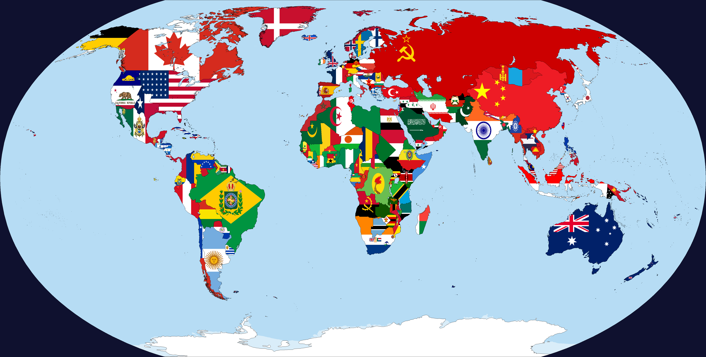
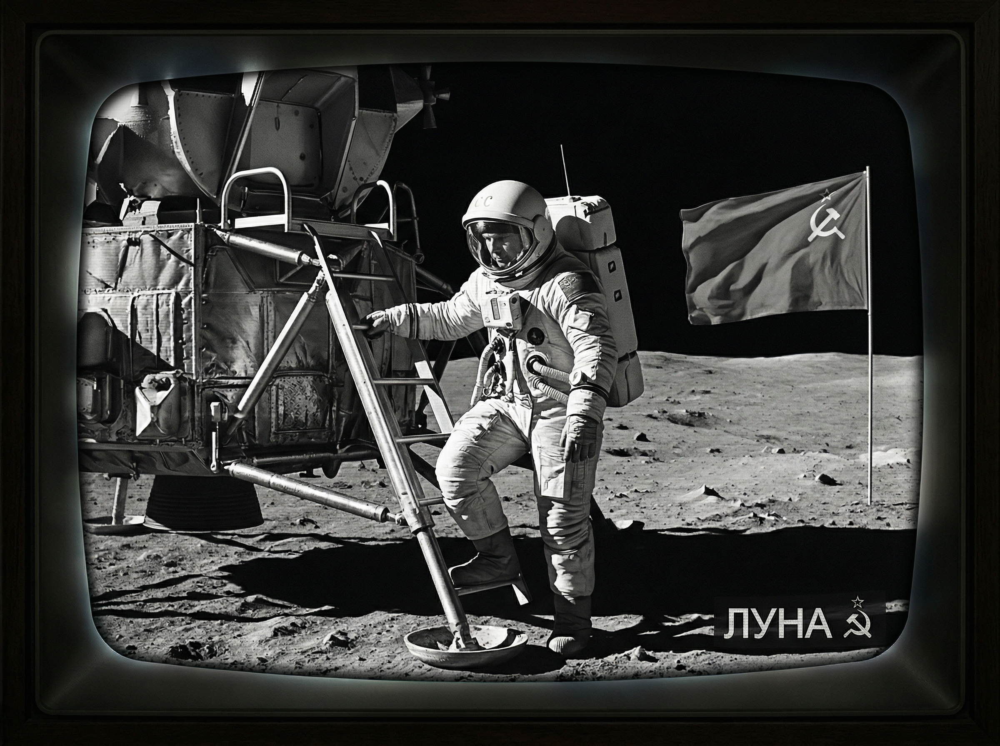
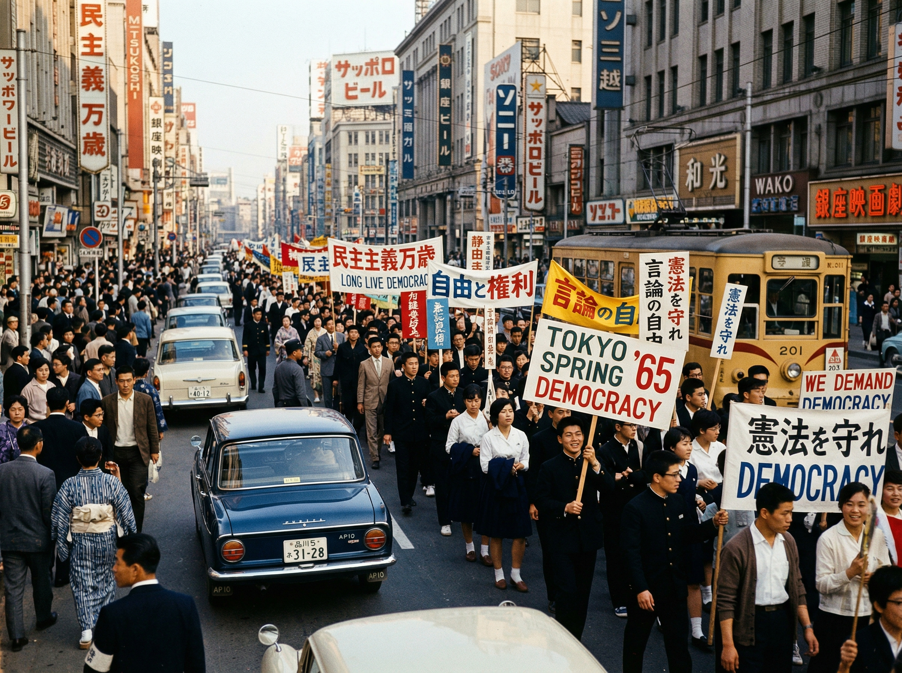
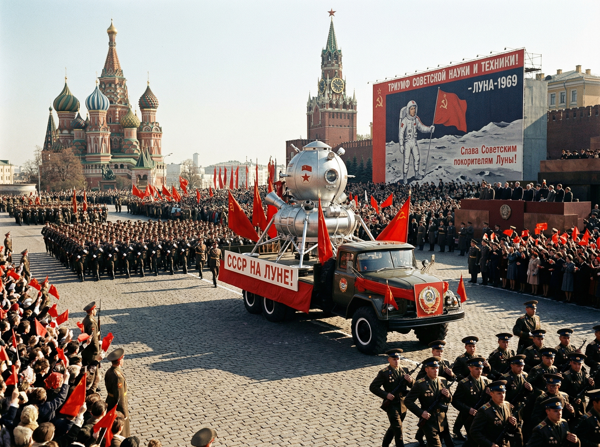
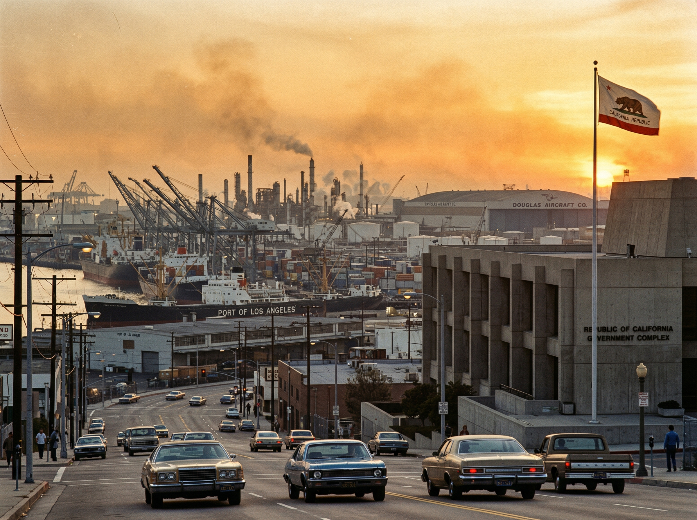

Mapa de la Descolonización y Nuevas Fronteras

El colapso del Imperio Japonés dio paso a una fragmentación masiva en Asia, mientras la URSS alcanzaba su máxima extensión de influencia.
La Primavera de Tokio (1960-1965)
Las masivas protestas estudiantiles y el autogolpe del Príncipe Higashikuni terminan con la dictadura militar. Japón inicia una transición democrática milagrosa, convirtiéndose en la segunda potencia económica mundial para 1972.
La Guerra Civil Coreana (1966-1969)
Tras la retirada japonesa, la península estalla en un conflicto ideológico. El resultado es la división permanente: el Sur capitalista (aliado de EE. UU. y Japón) y el Norte socialista (aliado de la URSS).
El Gran Cisma Socialista
China se independiza de Japón en 1965. En 1977, tras una breve alianza con Moscú, la República Popular China rompe relaciones con la URSS, creando un cuarto polo de poder nuclear y político.
Estabilidad en Nueva Granada
La República de la Nueva Granada evita los golpes de estado de nuestra realidad, gestionando el Canal de Panamá de forma soberana y actuando como contrapeso diplomático a los Estados Unidos.
🚩 Victoria Soviética en la Luna
En esta realidad, la Unión Soviética gana la Carrera Espacial. El primer hombre en la Luna es un cosmonauta soviético, consolidando la superioridad tecnológica del Bloque Socialista durante décadas.

Galería Histórica: 1960 - 1980


